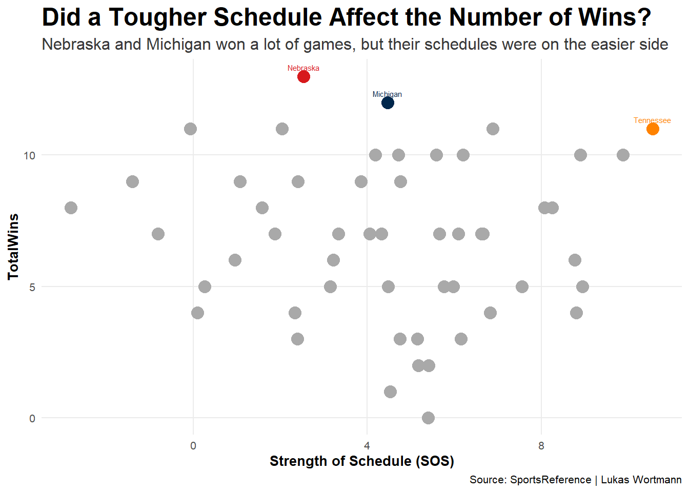
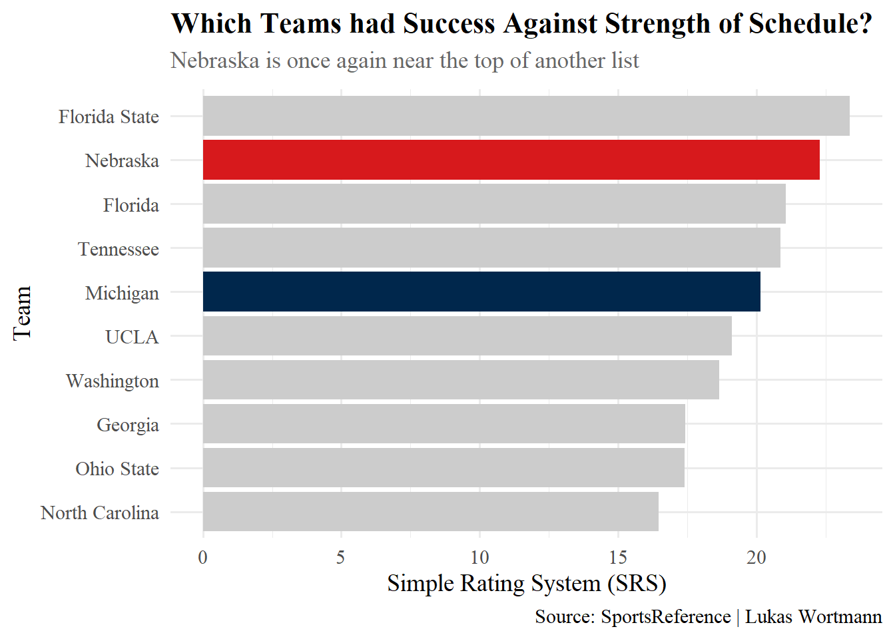

What Team Deserves to Be Called the 1997 College Football Champion?
football
champion
trophy
Author
Lukas Wortmann
Published
April 1, 2025
The 1997 College Football National Champion has been an ongoing debate for years. The Nebraska Cornhuskers finished 13-0 and ranked No. 1 in the coaches poll while the Michigan Wolverines finished 12-0 ranked No.1 in the AP poll at the end of the season. This resulted in a split for the National title and lots of controversy.
The two teams never faced each other during that season due to an agreement with the Rose Bowl game that featured the Big Ten Champion and the Pac-10 Champion.
The argument has been on going for nearly 30 years now, with fans and players from both sides believing that their team would have won if the two teams played.
The question is, who was the real National Champion that year?
Code
library(tidyverse)library(ggalt)library(gt)library(ggbeeswarm)library(ggrepel)stats1997 <-read_csv("power_five_stats1997.csv")rankings <- stats1997 |>group_by(Team) |>summarise(Offppg =sum(Offppg)) |>arrange(desc(Offppg)) |>top_n(10, Offppg)rankings |>gt() |>tab_header(title =md("**Top 10 Highest Scoring Offenses**"),subtitle =md("*Nebraska is ontop of the list by a wide margin while Michigan didn't crack the top 10*") ) |>cols_label(Team ="Team",Offppg ="Points Per Game" ) |>tab_style(style =list(cell_fill(color ="white"),cell_text(color ="black") ),locations =cells_body() ) |>tab_style(style =list(cell_fill(color ="white"),cell_text(weight ="bold", size ="large") ),locations =cells_column_labels() ) |>tab_style(style =list(cell_fill(color ="#d7191c"),cell_text(color ="#fdf2d9", weight ="bold") ),locations =cells_body(rows = Team =="Nebraska") ) |>tab_style(style =cell_text(color ="black", weight ="bold", size ="x-large"),locations =cells_title(groups ="title") ) |>tab_style(style =cell_text(color ="#383838", style ="italic"),locations =cells_title(groups ="subtitle") ) |>tab_source_note(source_note =md("**By:** Lukas Wortmann | **Source:** [Sports Reference](https://www.sports-reference.com/cfb/years/1997.html)") ) |>opt_table_lines()
Top 10 Highest Scoring Offenses
Nebraska is ontop of the list by a wide margin while Michigan didn’t crack the top 10
Nebraska absolutely dominated the offensive scoring category putting up nearly 47 points a game, giving them a six point edge on Washington State in the second spot.
Michigan averaged 26.8 points a game which put them nowhere near the top of the list. They landed in 26th spot out of the 54 power 5 conferences teams.
But does offense win you National Championships? I thought defense wins championships? Let’s take a look at the defensive side of the ball and which teams held down there opponents.
Code
defrankings <- stats1997 |>group_by(Team) |>summarise(AvgDefppg =mean(Defppg)) |>arrange(AvgDefppg) |>slice_head(n =10)defrankings |>gt() |>tab_header(title =md("**Teams with the least amount of points allowed**"),subtitle =md("*Both Michigan and Nebraska make the list, unlike the Offensive side*") ) |>cols_label(Team ="Team",AvgDefppg ="Points Allowed Per Game" ) |>tab_style(style =list(cell_fill(color ="white"),cell_text(color ="black") ),locations =cells_body() ) |>tab_style(style =list(cell_fill(color ="#d7191c"), cell_text(color ="#fdf2d9", weight ="bold") ),locations =cells_body(rows = Team =="Nebraska") ) |>tab_style(style =list(cell_fill(color ="#00274C"), cell_text(color ="#ffcb05", weight ="bold") ),locations =cells_body(rows = Team =="Michigan") ) |>tab_style(style =cell_text(color ="black", weight ="bold", size ="x-large"),locations =cells_title(groups ="title") ) |>tab_style(style =cell_text(color ="#383838", style ="italic"),locations =cells_title(groups ="subtitle") ) |>tab_source_note(source_note =md("**By:** Lukas Wortmann | **Source:** [Sports Reference](https://www.sports-reference.com/cfb/years/1997.html)") ) |>opt_table_lines()
Teams with the least amount of points allowed
Both Michigan and Nebraska make the list, unlike the Offensive side
The defensive side of the ball is a different story for Michigan. They were the only team to hold their opponents to under 10 points per game. Nebraska was not too far behind them only letting up one more touchdown per game.
What about strength of schedule, how difficult were teams schedules and what teams were they putting these numbers up on?
Code
nu <- stats1997 |>filter(Team =="Nebraska")mi <- stats1997 |>filter(Team =="Michigan")tn <- stats1997 |>filter(Team =="Tennessee")ws <- stats1997 |>filter(Team =="Washington State")ggplot() +geom_point(data = stats1997,aes(x = SOS, y = W), color ="darkgrey", size =4 ) +geom_point(data = nu,aes(x = SOS, y = W), color ="#d7191c", size =4 ) +geom_point(data = mi,aes(x = SOS, y = W), color ="#00274C", size =4 ) +geom_point(data = tn,aes(x = SOS, y = W), color ="#ff8200", size =4 ) +geom_text(data = nu,aes(x = SOS, y = W, label = Team), color ="#d7191c", vjust =-1, size =2 ) +geom_text(data = mi,aes(x = SOS, y = W, label = Team), color ="#00274C", vjust =-1, size =2 ) +geom_text(data = tn,aes(x = SOS, y = W, label = Team), color ="#ff8200", vjust =-1, size =2 ) +theme_minimal(base_size =10) +theme(plot.title =element_text(face ="bold", size =18),plot.subtitle =element_text(size =12, color ="#383838"),axis.title =element_text(face ="bold"),panel.grid.minor =element_blank() ) +labs(title ="Did a Tougher Schedule Affect the Number of Wins",subtitle ="Nebraska and Michigan won a lot of games, but their schedules were on the easier side",x ="Strength of Schedule (SOS)",y ="TotalWins", caption ="Source: SportsReference | Lukas Wortmann" )

The Cornhuskers had the most wins during the season but their strength of schedule does not really stand out that much, as for Michigan their schedule was slightly tougher than Nebraska.
If we look at Tennessee, A team who had the toughest schedule of anyone that season and still produced an 11-2 record. But when they faced Nebraska in the Orange Bowl they couldn’t keep up. Nebraska won 42-17.
Finally, let’s look at how teams actually preformed against their schedules?
Code
library(dplyr)library(ggplot2)SimpleRating <- stats1997 |>group_by(Team) |>summarise(SRS =sum(SRS), .groups ="drop") |>arrange(desc(SRS)) |>slice_max(SRS, n =10)SimpleRating <- SimpleRating |>mutate(Highlight =case_when( Team =="Michigan"~"Michigan", Team =="Nebraska"~"Nebraska",TRUE~"Other" ) )ggplot(SimpleRating, aes(x =reorder(Team, SRS), y = SRS, fill = Highlight)) +geom_col(show.legend =FALSE) +scale_fill_manual(values =c("Michigan"="#00274C", "Nebraska"="#d7191c", "Other"="#cccccc" )) +coord_flip() +labs(title ="Which Teams had Success Against Strength of Schedule",subtitle ="Nebraska is once again near the top of another list",x ="Team",y ="Simple Rating System (SRS)",caption ="Source: SportsReference | Lukas Wortmann" ) +theme_minimal(base_size =14, base_family ="serif") +theme(plot.title =element_text(face ="bold", size =16, color ="black"),plot.subtitle =element_text(size =13, color ="#666666", margin =margin(b =10)) )

Simple rating system is a stat that calculates a team based on their average point deferential and strength of schedule. Based off of the offensive and defensive points per game charts we could have expected Nebraska near the top of the list.
Nebraska’s strength of schedule might have be one of their only weaknesses, but that isn’t really something they can control, they did their job! They won the games on their schedule.
So which team would have won the hypothetical match up that year?
Lets put it this way. The Cornhuskers scored 27 or more points in every single game, while their defense only allowed more than 27 points one time, in a game remembered as “The Catch” against Missouri. We know that Michigan only averaged around 27 points a game, so would they have scored that many points on Nebraska?
If the two teams did face off, it would have been hard to believe that even Michigan’s defense was going to keep up with that Nebraska offense.